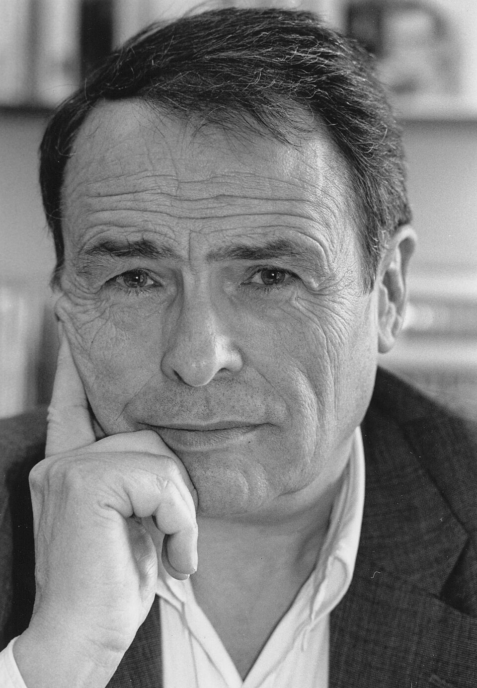
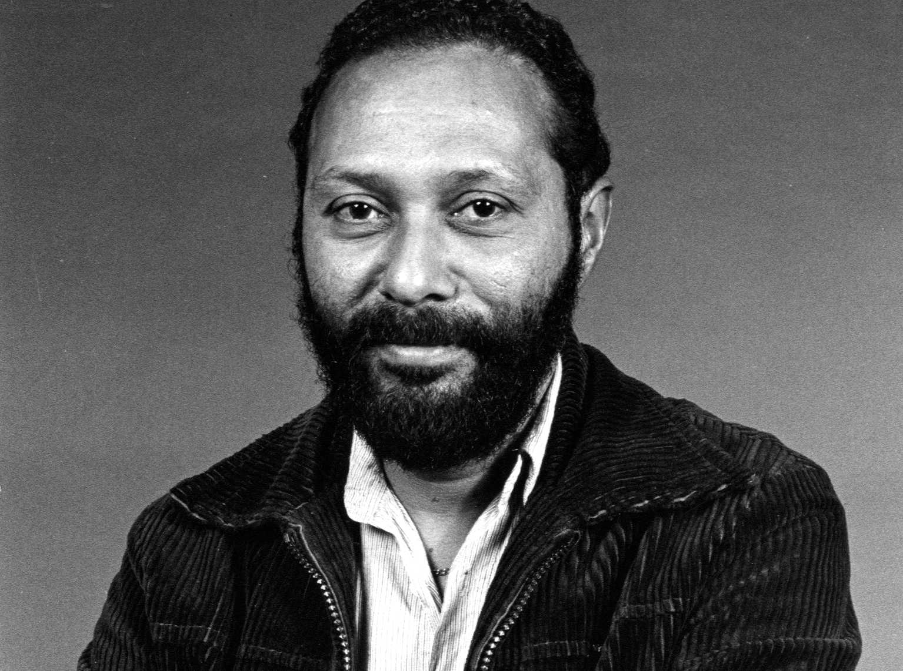
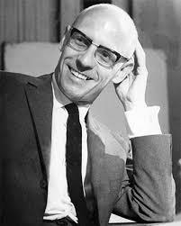
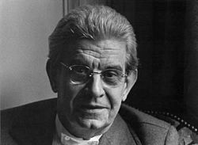

Language does not merely describe reality. It organizes it, distributes legitimacy,
marks some voices as natural and others as excessive, improper, foreign, vulgar,
too emotional, too academic, too loud, too broken, or not serious enough.
Language and media do not simply reflect the world. They circulate categories,
stabilize meanings, and help decide whose speech sounds authoritative, whose body
becomes legible, and whose difference is turned into a problem.
Core concept
Language as Power
Language is not neutral. It names, classifies, sorts, and legitimizes. Through
language, people are recognized or erased, included or marked as outside the norm.
The power to define terms often becomes the power to define reality itself.

Pierre Bourdieu
Sociologist of symbolic power, legitimate language, and distinction
The “right” way of speaking often appears natural only because power has already made it prestigious.
Media does not only transmit meaning. It produces it. Through repetition,
framing, stereotypes, headlines, genres, and visual codes, media teaches people
which identities are ordinary, suspicious, tragic, respectable, comic, or disposable.
Stuart Hall
Theorist of representation, ideology, and encoding / decoding

Representation is never just a mirror. It is one of the places where social reality gets made.
To name is never innocent. Labels can offer recognition, but they can also reduce,
pathologize, discipline, or freeze people into categories. Naming shapes what is
treated as normal, deviant, official, obscene, diagnosable, or intelligible.

Michel Foucault
Historian of discourse, classification, and normalization
Categories do not simply discover people. They often help produce the forms of life they claim to describe.
Obsession with correctness is rarely just about grammar. It is often about class,
nation, education, race, and legitimacy. “Proper speech” can function as a gate:
a way to separate the polished from the vulgar, the educated from the suspect,
the native from the outsider.
Pierre Bourdieu
Theorist of distinction, linguistic capital, and symbolic violence
What sounds “clean” or “educated” is often a social accent pretending to be universal reason.
Academic language can illuminate complex ideas, but it can also become a ritual of exclusion.
Complexity is not always rigor. Sometimes it operates as performance — a way to signal belonging,
protect authority, and maintain control over who gets to participate in meaning-making.
Jargon and opacity can function as institutional self-defense. When language becomes harder than
the idea itself, it no longer clarifies — it filters. It quietly separates those who are allowed
to speak from those who must first prove they deserve to be heard.
In this sense, academic language is not only about knowledge. It is about access, legitimacy,
and circulation. It shapes whose thinking is recognized as serious, whose voice is treated as
authoritative, and whose insight is dismissed as “informal,” “simplistic,” or “not rigorous enough.”
Accessibility, then, is not the opposite of depth. It is a political and pedagogical choice:
a refusal to equate obscurity with intelligence, and a commitment to making knowledge travel
beyond the spaces that produced it.
Hidden layer
Academic Colonialism & the Geography of Legitimacy
Elitism in academia is not only about style. It is also about geography. Western authors,
English-language publishing, and Euro-American institutions are often treated as the center
of theory, while scholars from elsewhere are framed as regional, local, supplementary, or
merely “context.”
This creates a hierarchy in which some knowledge travels as universal, while other knowledge
must first ask permission to be translated, cited, or taken seriously. Academic canon can work
like empire in slow motion: selecting what counts, what gets archived, and whose concepts are
allowed to name the world.
Some knowledge is called universal not because it is neutral, but because power gave it a passport.
Language often functions as a border long before any official checkpoint appears. Accent,
vocabulary, fluency, hesitation, and grammatical “mistakes” can become signs through which
people are judged as trustworthy, educated, assimilated, suspicious, employable, or out of place.
National language is often presented as cultural unity, yet it can operate as exclusion.
Monolingual pride, correction rituals, and hostility to “foreign” speech help draw the line
between those imagined as naturally belonging and those expected to constantly prove themselves.
Sara Ahmed
Scholar of orientation, belonging, and institutional fit
To sound “out of place” is often to be reminded that belonging is being monitored.
Code-switching is often described as flexibility, but for many people it is also labor.
It can mean constantly adjusting tone, vocabulary, accent, body language, or verbal style
in order to appear safer, smarter, less threatening, more employable, or more “professional.”
Linguistic passing does not erase power. It reveals it. The need to reshape one’s voice
in order to be recognized as competent or harmless shows that dominant norms are already
dictating which versions of speech are rewarded.
Pierre Bourdieu · Black linguistic critique
Language as capital · speech as negotiation under unequal conditions
Adapting your voice can be skill, but it can also be evidence that the room was never built for you.
Injurious language wounds, disciplines, and marks people as less than fully legitimate.
But language can also be seized, twisted, reclaimed, and returned with altered force.
Reclaiming is never automatic or universal. It is historical, collective, contextual, and often contested.
To speak back is not only to use different words. It is to interrupt the right of dominant language
to define reality without resistance.
Judith Butler
Philosopher of injurious speech, resignification, and performative language
A word can wound, but its meaning is never fully sealed shut forever.
We do not step into language as fully finished selves. We become intelligible through systems
of meaning that were already there before us. Language gives us the tools to say “I,” but it also
limits what kinds of “I” become thinkable, speakable, and socially recognizable.
This is one reason identity is never purely private. Even the inner life borrows its grammar
from a world already structured by symbols, norms, and relations of power.

Jacques Lacan
Psychoanalyst of subject formation, language, and the symbolic order
The self speaks through language, but language was already speaking before the self arrived.